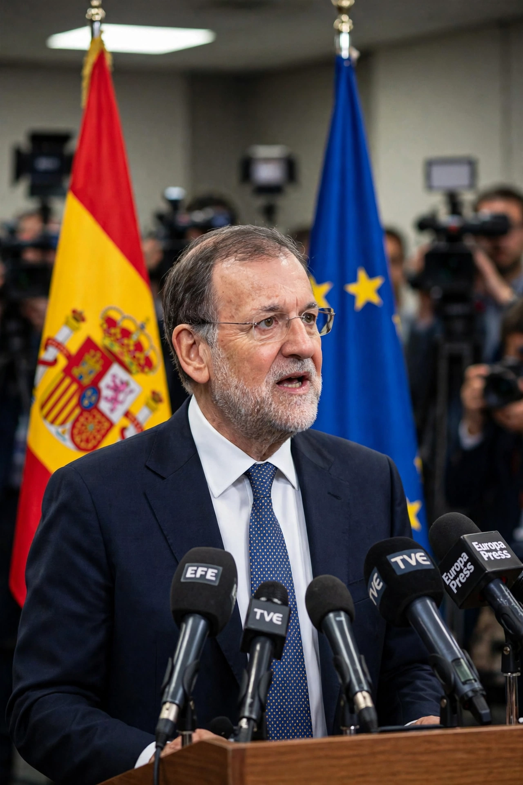

Mariano Rajoy Brey (born 27 March 1955) is a Spanish politician who served as Prime Minister of Spain from 2011 to 2018, leading the People's Party (PP). He was removed by a motion of no confidence in 2018.

| Born | 27 March 1955, Santiago de Compostela |
|---|---|
| Prime Minister | 2011–2018 |
| Party | People's Party |
Rajoy won the 2011 election amid the eurozone debt crisis and implemented austerity, labour reform, and a bank bailout. His second term followed the inconclusive 2015–2016 elections. He invoked Article 155 during the 2017 Catalan independence crisis, dismissing the Catalan government.
After the Gürtel corruption verdict against PP figures, Pedro Sánchez's no-confidence motion passed on 1 June 2018 — the first successful such motion in modern Spain. Rajoy then left politics.